Wer sind wir — und warum Care-Streik?
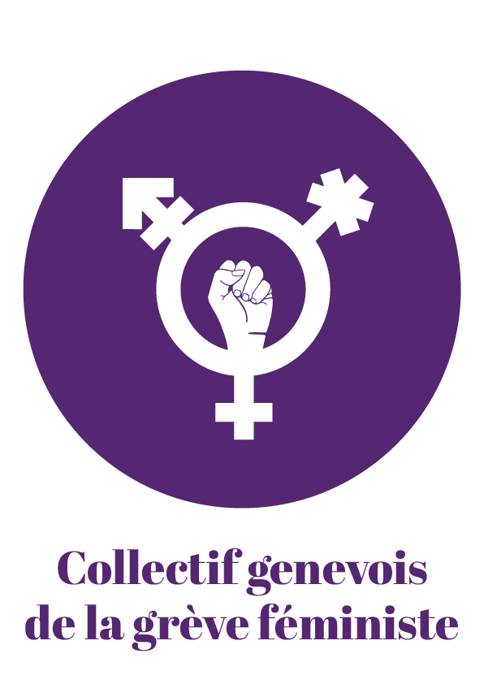
Genève
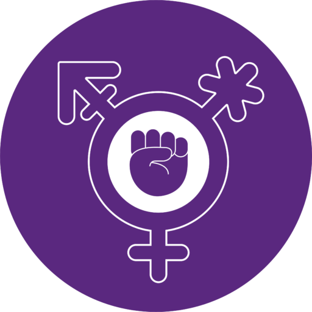
Vaud
Bern
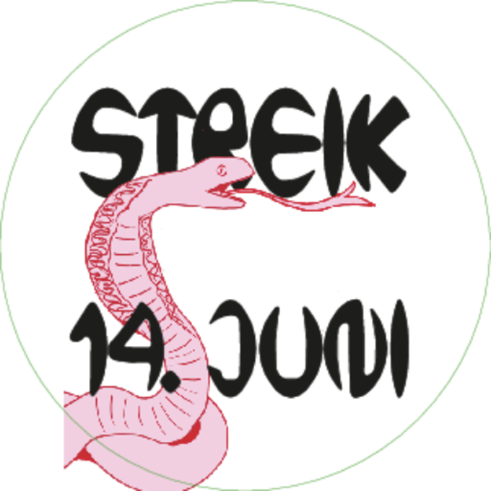
Basel
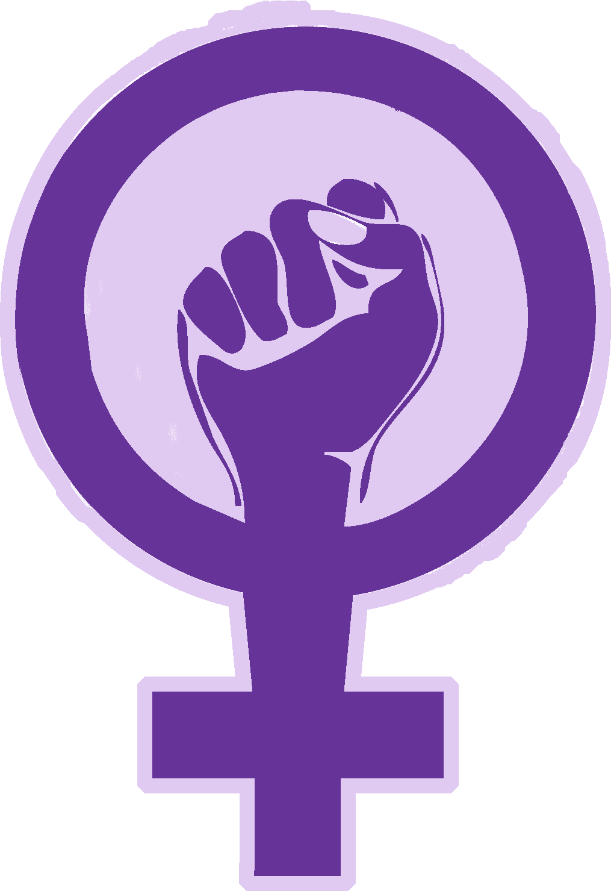
Aargau
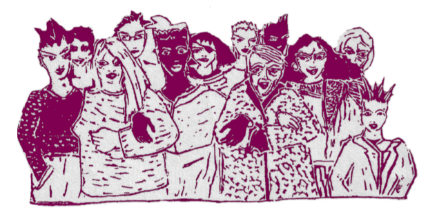
Winterthur
St. Gallen
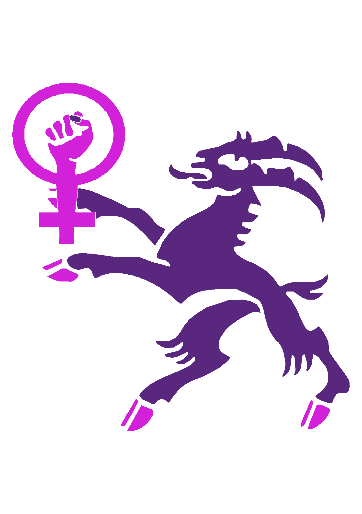
Graubünden
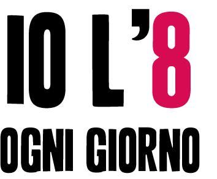
Ticino
Feministisches Streikhaus Zürich

14. Juni 1991

Erster Frauenstreik der Schweiz · Arbeiterinnen Jura
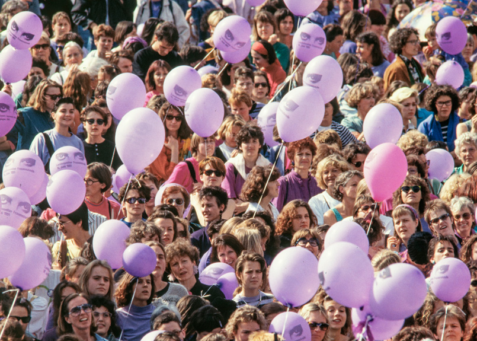
Helvetiaplatz Zürich · Lila Ballons · «Wenn Frau will, steht alles still»
Frauenstimmrecht: 16. März 1971
Innerrhoden: 29. April 1990
Innerrhoden: 29. April 1990

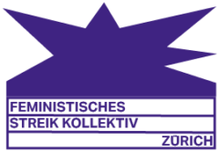
Feministisches
Streikkollektiv
Zürich
Streikkollektiv
Zürich
14. Juni 2019
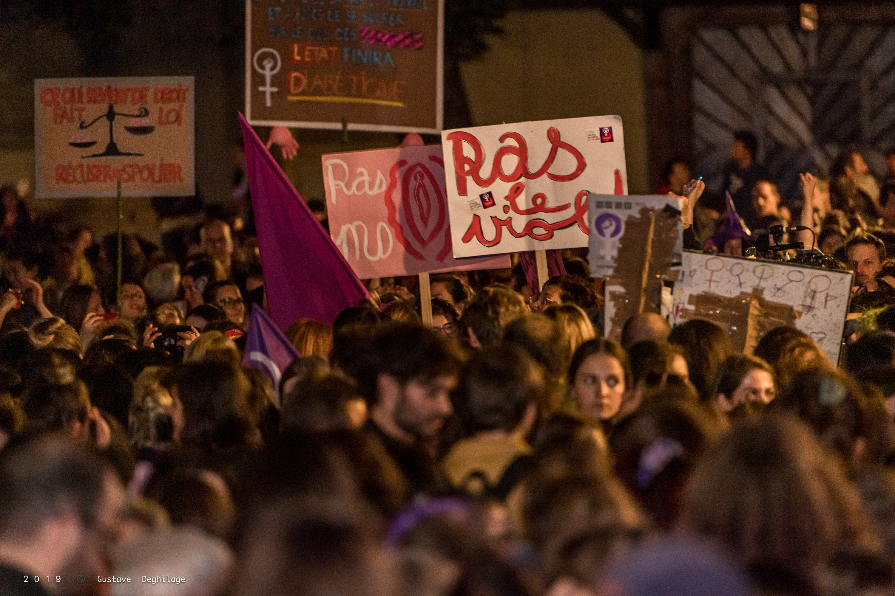
Lausanne · 500'000+ Teilnehmende schweizweit
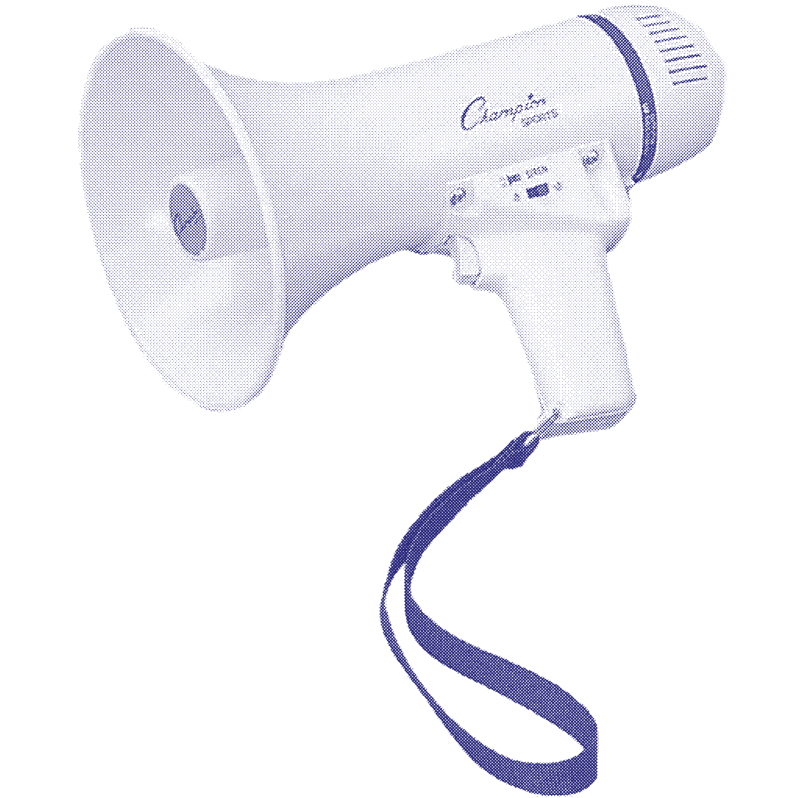
«Wenn Frau will, steht alles still.»
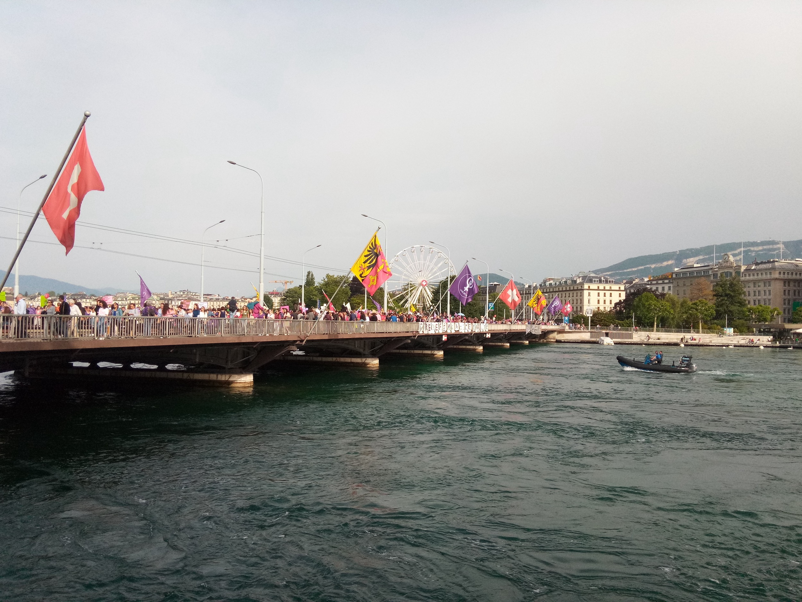
Genève · Pont du Mont-Blanc
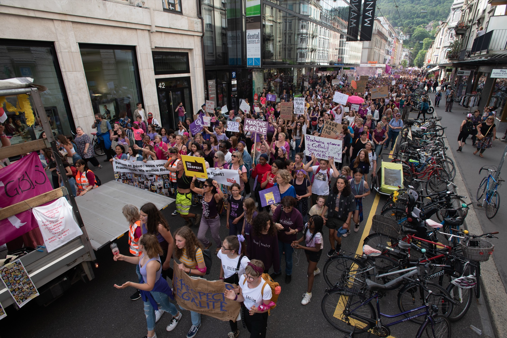
Biel/Bienne
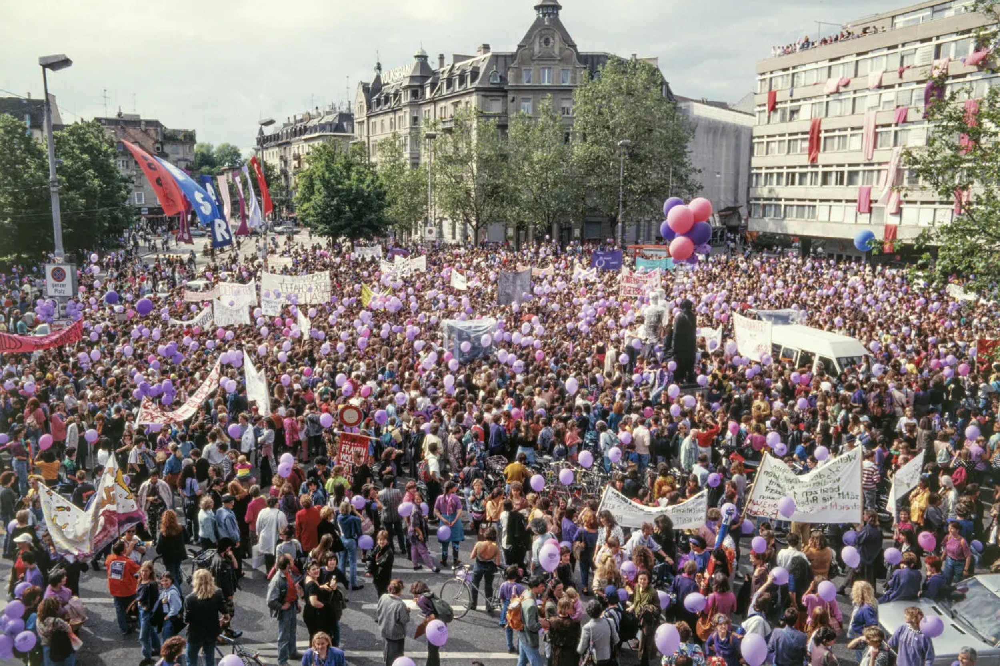
Zürich
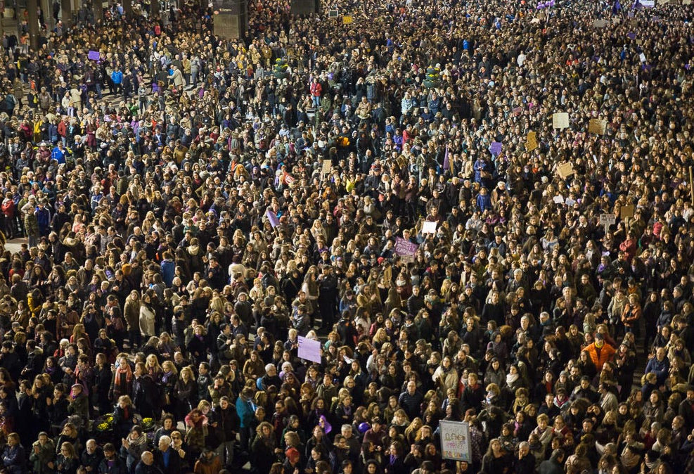
Frauenstreik 2019 · Quelle: sozialismus.ch
Geschichte & Definition Care
Forderungen & Streik
Ansätze & Diskussion
Der 14. Juni hat eine
Entpolitisierung erfahren.
Symbolische Demo reicht nicht.
Fokus: effektive Arbeitsniederlegung —
mit Gewerkschaften und darüber hinaus.
Entpolitisierung erfahren.
Symbolische Demo reicht nicht.
Fokus: effektive Arbeitsniederlegung —
mit Gewerkschaften und darüber hinaus.

Die Krise spitzt sich zu.
Das System bricht zusammen, wenn Care-Arbeit nicht mehr unbezahlt getätigt wird.
01
Personalmangel
Pflege, Kitas, Schulen: massive Unterbesetzung. Wir werden immer älter — der Bedarf steigt.
02
Unterbezahlung
Care-Berufe systematisch unterbezahlt. Arbeits- und Lebensbedingungen verschlechtern sich.
03
Abwertung
Care-Arbeit kann nicht schneller gemacht werden — Heilung braucht Zeit. Der Kapitalismus verlangt immer mehr für weniger. Feminisierte Arbeit wird systematisch entwertet.

„Notwendig ist ein grundlegender Perspektivenwechsel — nicht weniger als eine Care Revolution. Nicht Profitmaximierung, sondern menschliche Bedürfnisse und die Sorge umeinander ins Zentrum."
— Gabriele Winker · Care Revolution · transcript Verlag, 2015
„
Unbezahlte Arbeit · Fokus 2026
Der feministische Streik ist mehr als der Kampf um gleiche Löhne. Der feministische Streik ist ein politischer Streik — er richtet sich gegen das System, nicht nur gegen einzelne Arbeitgeber. In diesem Sinn ist der feministische Streik ziviler Ungehorsam.
— Franziska Schutzbach